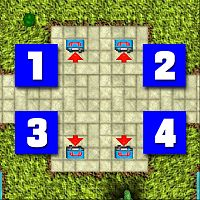
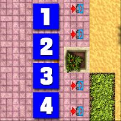
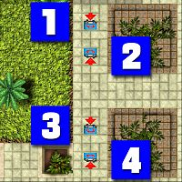
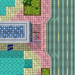
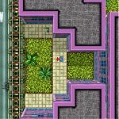
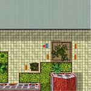
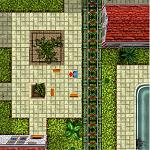

Vice City 1 (Bent Cop Blues)
Samuel Deever
公衆電話が全部で16台ありますが、順番は決まっていませんので、好きなものから進めていってください。
| ボス | Deever |
|---|---|
| 目標スコア | 300万 |
| ミッション | 16 |
公衆電話ミッション (SW Vice Shores)
この4つの公衆電話はそれぞれミッション1〜4につながっています。攻略はどのミッションからでも結構です。
| SW Vice Shores |
 |
Mission 1
- 任務
- 検事のネズミと思しき新人を始末する
- フロー
-
 → NE Greek Heights
→ SE Richman Heights
→ (160秒)
→ N Vice Shores
→ C Banana Grove
→ NE Greek Heights
→ SE Richman Heights
→ (160秒)
→ N Vice Shores
→ C Banana Grove
ターゲットは Regal に乗って NE Greek Heights 付近を走行中です。しばらく着いていくと SE Richman Heights で車を降り、歩き出します。奴が公衆電話に到着する前に始末してください。
すると、奴が出るはずだった電話が鳴ります。電話に出ると、奴の妻は Vice Shores Station にいることがわかります。急いで N Vice Shores の駅に向かってください。
時間内に妻を殺したら、C Banana Grove のガレージに戻るとミッション完了です。
| スコア | チェックポイント |
|---|---|
| +5,000 | 新人を殺す |
| +10,000 | 新人の妻を殺す |
| +35,000 | C Banana Grove のガレージに戻る (Mission Complete) |
Vice Shores Station へは W Vice Beach から長い歩道橋を渡っていかなければなりません。制限時間がやけに長いのはこのためです。
Mission 2
- 任務
- Angels から保護料としてバイクを戴く
- フロー
-
 → C Felicity
→ N Greek Heights
→ C Coral City
→ S Greek Heights
→ C Felicity
→ N Greek Heights
→ C Coral City
→ S Greek Heights
Angels は C Felicity にいます。リーダーのバイクを奪ったら N Greek Heights のガレージに収めてください。Angels の攻撃を受けますが、すぐに離れれば問題はないでしょう。
バイクが端金にしかならないので、今度は車を奪います。C Coral City に駐車されている Penetrator を S Greek Heights のガレージに収めるとミッション完了です。
| スコア | チェックポイント |
|---|---|
| +1,000 | Angels の Bike に乗り込む |
| +1,000 | Bike を N Greek Heights のガレージに収める |
| +1,000 | C Coral City の Penetrator に乗り込む |
| +20,000 | Penetrator を S Greek Heights のガレージに収める (Mission Complete) |
Penetrator に乗ると爆弾ラジコンが追いかけてきますが、止まらなければほとんど問題ありません。
Mission 3
- 任務
- 無断で銀行強盗をする連中を懲らしめる
- フロー
-
 → SE Banana Grove
→ NW Richman Heights(
→ SE Banana Grove
→ NW Richman Heights( )
→ C Banana Grove
)
→ C Banana Grove
SE Banana Grove に駐車されている Brigham に乗って NW Richman Heights にある銀行に向かいます。
銀行前で男を乗せたら C Banana Grove のガレージに連れて行くとミッション完了です。
| スコア | チェックポイント |
|---|---|
| +5,000 | SE Banana Grove の Brigham に乗り込む |
| +10,000 | 銀行で男を乗せる |
| +35,000 | C Banana Grove のガレージに戻る (Mission Complete) |
銀行の東南東方向に Police Bribe が出現します。取るかどうかはお任せしますが。
Mission 4
- 任務
- Deever の部下に分け前を与える
- フロー
-
 → E Little Dominica
→ SE Vice Beach
→ NW Richman Heights()
→ E Little Dominica
→ SE Vice Beach
→ NW Richman Heights()
E Little Dominica → SE Vice Beach → NW Richman Heights と回って金を渡していってください。最後の奴は金が少ないなどと文句を垂れるので始末します。これでミッション完了です。
| スコア | チェックポイント |
|---|---|
| +1,000 | E Little Dominica にいる部下に金を渡す |
| +1,000 | SE Vice Beach にいる部下に金を渡す |
| +1,000 | NW Richman Heights にいる部下に金を渡す |
| +25,000 | NW Richman Heights にいる部下を殺す (Mission Complete) |
最後は銃で撃たれないように気をつけてください。
公衆電話ミッション (E Vice Beach)
この4つの公衆電話はそれぞれミッション5〜8につながっています。攻略はどのミッションからでも結構です。
| E Vice Beach |
 |
Mission 5
- 任務
- ボスの前妻に連れ去られた子供を連れ戻す
- フロー
-
→ N Felicity()
→ S Banana Grove
→ NE Vice Beach
→ S Coral City()
→ S Banana Grove
→ N Greek Heights
→ N Vice Shores 付近()
→ S Banana Grove
→ NE Felicity
→ SE Richman Heights 付近()
→ S Banana Grove
→ W Greek Heights
子供は N Felicity にある Repair Van に乗っています。その車に乗り込んだら S Banana Grove に向かってください。ボスの指示に従い、子供を NE Vice Beach のガレージに連れて行ってください。
続いて、ボスの後をつけ回しているという記者の車を盗むように指示されます。S Coral City に停まっている Impaler を S Banana Grove に持っていきます。車を調べても何も見つからず、N Greek Heights のガレージに持っていくことになります。
今度は、盗まれた娘の車を取り返します。N Vice Shores 付近を走行している Itali GTB を取り戻したら、S Banana Grove の先ほどの場所に持っていきます。すると、NE Felicity に持っていくように指示されますので、そのようにしてください。
最後に、ボスの妻を連れてくるように指示されます。SE Richman Heights 付近を走行中の Jugular に乗り込んだら、例によって S Banana Grove に向かいます。ボスの指示で、W Greek Heights のガレージまで連れて行くとミッション完了です。
| スコア | チェックポイント |
|---|---|
| +4,000 | N Felicity の Repair Van に乗り込む |
| +4,000 | Repair Van を S Banana Grove に持っていく |
| +4,000 | Repair Van を NE Vice Beach のガレージに収める |
| +4,000 | S Coral City の Impaler に乗り込む |
| +4,000 | Impaler を S Banana Grove に持っていく |
| +4,000 | Impaler を N Greek Heights のガレージに収める |
| +4,000 | Itali GTB に乗り込む |
| +4,000 | Itali GTB を S Banana Grove に持っていく |
| +4,000 | Itali GTB を NE Felicity のガレージに収める |
| +4,000 | Jugular に乗り込む |
| +4,000 | Jugular を S Banana Grove に持っていく |
| +6,000 | Jugular を W Greek Heights のガレージに収める (Mission Complete) |
やけに長いミッションですが、一つ一つは特に難しくないはずです。手配マークは付けっぱなしでも大丈夫でしょう。
Mission 6
- 任務
- Rastas のヤクの売人を殺す
- フロー
-
→ SW Vice Beach
→ N Miramire
SW Vice Beach 付近を走行中の Limousine を奪うように指示されます。車の進路を塞ぐと運転手が攻撃を仕掛けてきますので、気をつけて乗り込んでください。
最寄りの爆弾ショップで爆弾を仕掛けたら、N Miramire にいる売人を乗せます。
武器発車キーで爆弾を発動させ、車から離れてください。数秒後、車と共に売人が死んでミッション完了です。
| スコア | チェックポイント |
|---|---|
| +5,000 | Limousine に乗り込む |
| +6,000 | Limousine に爆弾を仕込む |
| +40,000 | 自動車爆弾で売人を殺す (Mission Complete) |
売人を乗せたら、24秒以内に爆破しないとミッション失敗となります。また、Limousine を奪うのにもたつきすぎてもだめです。
Mission 7
- 任務
- Rastas のクラックハウスを爆破する
- フロー
-
→ E Felicity
→ NW Richman Heights()
→ NW Little Bogota
→ SW Coral City
→ N Miramire
→ W Vice Shores
E Felicity にある F-19 に乗り込んだら、最寄りの爆弾ショップで爆弾を仕掛けてください。
NW Richman Heights にあるクラックハウスに車を止めたら、爆弾を始動させてください。数秒後、爆発が起こり、ハウスが破壊されます。
続いて、NW Little Bogota → SW Coral City → N Miramire → W Vice Shores と回って売人から金を集めていきます。全員から集め終わるとミッション完了です。
| スコア | チェックポイント |
|---|---|
| +6,000 | E Felicity の F-19 に乗り込む |
| +1,000 | F-19 に爆弾を仕込む |
| +1,000 | NW Little Bogota の売人から金を徴収する |
| +1,000 | SW Coral City の売人から金を徴収する |
| +1,000 | N Miramire の売人から金を徴収する |
| +31,000 | W Vice Shores の売人から金を徴収する (Mission Complete) |
クラックハウス＝コカイン密売所だそうです。
Mission 8
- 任務
- ヤクを積んだトラックを破壊する
- フロー
-
→ W Little Bogota
トラックは W Little Bogota で行われているヤクの取引現場に停まっています。売人連中の攻撃をどうにか回避し、トラックを破壊するとミッション完了です。
ちなみに、連中を3秒以内に全員殺すと「PSYCHO BASTARD BONUS!（殺人狂ボーナスです！）」ボーナスが入ります。
| スコア | チェックポイント |
|---|---|
| +25,000 | (オプション)売人連中を3秒以内に全員殺す(PSYCHO BASTARD BONUS!) |
| +80,000 | Tanker を破壊する (Mission Complete) |
ミッションは単純明快ですが、なかなかハードです。向かってくる奴は金網越しにマシンガン、中央付近にいる奴は、リムジンを左に押して爆破。これで残り2人ほどに出来るはずです。ミッション完了後、Brigham がどこからともなく現れ、轢き殺そうとしてくるので注意してください。
公衆電話ミッション (SW Greek Heights)
この4つの公衆電話はそれぞれミッション9〜12につながっています。攻略はどのミッションからでも結構です。
| SW Greek Heights |
 |
Mission 9
- 任務
- Rastas のヤクを横取りする
- フロー
-
→ NW Vice Beach
→ SE Richman Heights
→ C Banana Grove
→ SE Richman Heights
→ N Felicity
→ C Banana Grove
→ S Greek Heights
→ SE Vice Beach
→ SE Banana Grove
→ N Felicity
→ N Vice Beach
→ NW Greek Heights
→ S Felicity
まず NW Vice Beach にいる情報屋に話を聞きに行きます。すると、連中は SE Richman Heights の港でヤクの荷揚げをしようとしていることがわかります。
港に行くと連中が襲いかかってきますが、何とか応戦し、Limousine を奪ってください。車を C Banana Grove のガレージに収めたら、もう一台も同じように N Felicity に運んでください。
今度は、奪ったヤクを売りさばいていきます。C Banana Grove に駐車されている Brigham を運転し、S Greek Heights → SE Vice Beach → SE Banana Grove と回ってください。
今度は N Felicity の Brigham に乗り換えて、N Vice Beach → NW Greek Heights → S Felicity と回るとミッション完了です。
| スコア | チェックポイント |
|---|---|
| +1,000 | NW Vice Beach の情報屋から話を聞く |
| +25,000 | (オプション)港にいる連中を3秒以内に全員殺す(PSYCHO BASTARD BONUS!) |
| +10,000 | Limousine を C Banana Grove のガレージに収める |
| +10,000 | Limousine を N Felicity のガレージに収める |
| +3,000 | S Greek Heights の客にヤクを卸す |
| +3,000 | SE Vice Beach の客にヤクを卸す |
| +3,000 | SE Banana Grove の客にヤクを卸す |
| +3,000 | N Vice Beach の客にヤクを卸す |
| +3,000 | NW Greek Heights の客にヤクを卸す |
| +33,000 | S Felicity の客にヤクを卸す (Mission Complete) |
マシンガンを持っている奴が2人います。スピードの速い車で突っ込んで、まずこの2人を殺してしまうのがいいでしょう。
Mission 10
- 任務
- 医者を送迎する
- フロー
-
→ S Banana Grove
→ SE Little Dominica
→ C Banana Grove
S Banana Grove に停めてある Limousine を運転して SE Little Dominica のクリニックに向かいます。
現場に着くと、待ち伏せに攻撃されますので、急いで離脱してください。敷地の入口もいつの間にか車でブロックされているので気をつけてください。
C Banana Grove に無事戻るとミッション完了です。
| スコア | チェックポイント |
|---|---|
| +5,000 | Limousine に乗り込む |
| +5,000 | クリニックに到着する |
| +40,000 | C Banana Grove のガレージに戻る (Mission Complete) |
すぐに逃げられるように、敷地へはバックで入っていきましょう
Mission 11
- 任務
- Rastas の手下のカーディーラーを思い知らせる
- フロー
-
→ C Vice Shores
→ SW Little Dominica
→ NE Little Bogota
→ C Vice Shores()
C Vice Shores のカーディーラーから Hotrod を盗み出してください。
車を運転して SW Little Dominica の運動場に向かってください。入口付近を通過すると Rastas の連中に発見されます(必須)。発砲されますので、入口付近の連中と、中にいる5人を蹴散らしてください。
続いて、NE Little Bogota にある Brigham を盗み、先ほどのカーディーラーに戻ります。
そこに展示されている車をすべて破壊するとミッション完了です。建物の側にある Impaler を破壊すると建物も爆発しますので、巻き込まれないように気をつけてください。
| スコア | チェックポイント |
|---|---|
| +1,000 | C Vice Shores の Hotrod に乗り込む |
| +1,000 | 運動場の中に入る |
| (各)+5,000 | 運動場の中にいるメンバーを殺す |
| +25,000 | (オプション)運動場の中にいる5人を3秒以内に全員殺す(PSYCHO BASTARD BONUS!) |
| +1,000 | NE Little Bogota の Brigham に乗り込む |
| (各)+1,000 | カーディーラーの展示車を破壊する |
| +15,000 | カーディーラーの展示車をすべて破壊する (Mission Complete) |
ミッション開始前に Little Dominica の運動場の入口にいる連中を片づけておくといいでしょう。運動場の南にあるペイントショップと、その裏の路地にある防弾チョッキもうまく利用してください。
Mission 12
- 任務
- Rastas のコカイン工場を突き止め、破壊する
- フロー
-
→ SE Banana Grove 付近
→ N Miramire
→ NW Little Bogota
→ N Miramire()
ヤクの運び屋が 29 Special に乗って SE Banana Grove 付近を走行しています。急いで追いかけて、追跡を開始してください。
運び屋は、N Miramire で車を降ります。これにより工場の場所が判明します。ボスの指示で NW Little Bogota にある Tanker を盗みに行きます。
敷地に入ると3人の警備員に発砲されます。マシンガンを持っている1人を優先的に殺して、トラックを盗み出してください。
トラックを先ほどの工場の前に停め、武器で撃って爆破するとミッション完了です。
| スコア | チェックポイント |
|---|---|
| +5,000 | 工場の場所を突き止める |
| +15,000 | Tanker に乗り込む |
| +25,000 | 工場の前でトラックを爆破する (Mission Complete) |
性能のいい車でミッションを開始してください。
公衆電話ミッション
| S Vice Beach | NE Richman Heights | NW Vice Shores | W Banana Grove |
 |
 |
 |
 |
Mission 13
- 任務
- Rastas に罪をなすりつける
- フロー
-
→ S Vice Beach
→ SW Felicity
→ W Little Bogota
→ E Felicity
→ W Little Bogota
→ E Vice Beach
→ W Little Bogota
→ NW Felicity
→ W Little Bogota()
ボスが仕事で使用したヤバい車を W Little Bogota の広場に集めていきます。車は全部で4台あります。
集め終わったら、すべて破壊するとミッション完了です。
| スコア | チェックポイント |
|---|---|
| +1,000 | S Vice Beach の電話に出る |
| +1,000 | SW Felicity の Transit Van に乗り込む |
| +1,000 | E Felicity の TV Van に乗り込む |
| +1,000 | E Vice Beach の Transit Van に乗り込む |
| +1,000 | NW Felicity の Pickup に乗り込む |
| +70,000 | 車をすべて破壊する (Mission Complete) |
車がとろいので時間が掛かりますが、何も難しいことはないです。
Mission 14
- 任務
- 病院を訪問中のファーストレディーを殺害する
- フロー
-
NE Richman Heights
→ { → NE Little Dominica
→ S Banana Grove
→ NE Little Dominica()}(400秒)
夫人のリムジンは NE Little Dominica の病院に停まっています。車に乗り込んだら S Banana Grove の隠れ家に向かってください。
ボスの指示を受け、最寄りの爆弾ショップで爆弾を仕掛けたら、NE Little Dominica の病院に車を戻します。武器発車キーで爆弾を発動させ、車を降りてください。数秒後に爆発が起こり、ミッション完了です。
| スコア | チェックポイント |
|---|---|
| +1,000 | NE Richman Heights の電話に出る |
| +10,000 | Limousine に乗り込む |
| +10,000 | S Banana Grove の隠れ家に行く |
| +30,000 | 自動車爆弾で病院を爆破する (Mission Complete) |
リムジンの両側に護衛がいますので、気をつけてください。
Mission 15
- 任務
- Burro を殺す
- フロー
- NW Vice Shores → C Little Bogota → SW Vice Shores
C Little Bogota にある Transit Van に乗って SW Vice Shores の公園に向かってください。
見張りの攻撃をかいくぐって Burro を殺すとミッション完了です。
| スコア | チェックポイント |
|---|---|
| +1,000 | C Little Bogota の Transit Van に乗り込む |
| +50,000 | Burro を殺す (Mission Complete) |
公園に一歩でも入ると見張りが一斉に襲いかかってきます。こいつらを公園から出さないようにうまく誘導し、金網越しに攻撃するのがいいでしょう。ところで、Transit Van に乗るのは何故なのでしょうか。
Mission 16
- 任務
- 内務調査員をバラす
- フロー
- W Banana Grove → W Richman Heights 付近 → S Banana Grove → SE Coral City → C Banana Grove
内務調査員の Dell は W Richman Heights 付近を走行中です。彼が E Coral City の警察署に到着する前に追いかけて殺してください。
続いて、S Banana Grove に停まっている Limousine に乗り込みます。車を運転して SE Coral City の裁判所に行き、Deever を乗せてください。このとき、7人ほどいる見張りに激しい銃撃を受けますので、手早く事を運んでください。
そのまま車を運転し、C Banana Grove のガレージに戻るとミッション完了です。
| スコア | チェックポイント |
|---|---|
| +1,000 | W Banana Grove の電話に出る |
| +5,000 | Dell を殺す |
| +1,000 | S Banana Grove の Limousine に乗り込む |
| +15,000 | 裁判所で Deever を車に乗せる |
| +20,000 | Deever を C Banana Grove のガレージに送る (Mission Complete) |
Deever を乗せる前に見張りを始末しておいてもいいかもしれません。
チャプタークリア
クリアポイントの300万点を獲得したら W Banana Grove にいる Deever に会いに行ってください。